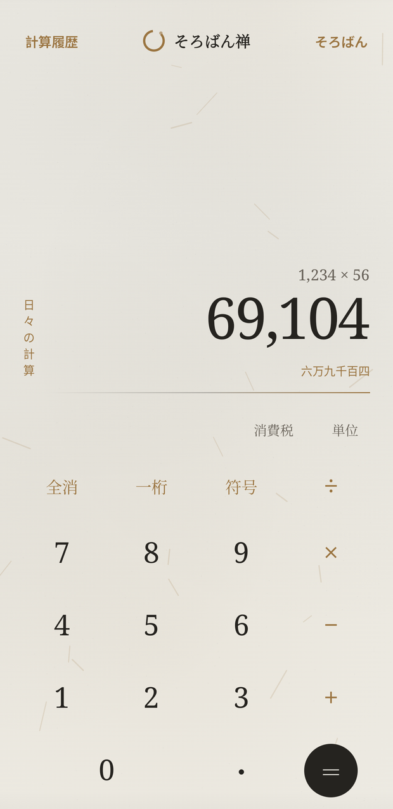
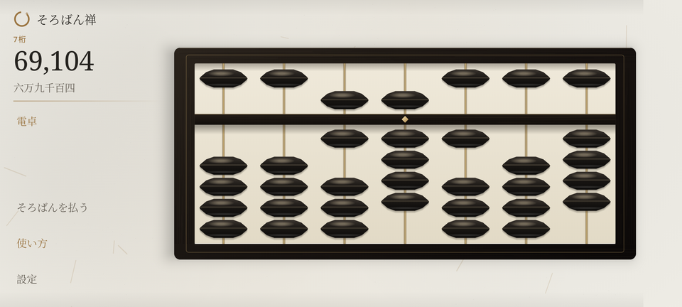
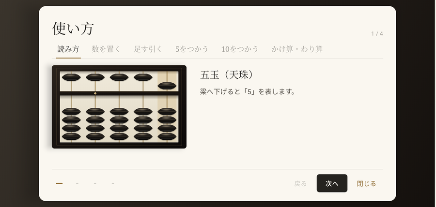

単一の縦向きウィンドウ内で作動し、端末の構えを検知して内部描画を九十度反転配置します。
| 構え | 作動様式 | 動作特性と画面挙動 |
|---|---|---|
| 縦持ち | 静謐なる電卓 | 落ち着いた配色の十進計算機。漢数字読みと計算履歴録を表示。 |
| 横持ち | 和式七桁そろばん | 珠を指で運ぶ七桁の算盤。左の操作レールから「使い方」と「設定」を開けます。 |

| 印 | 部位名目 | 機能解説と運算仕様 |
|---|---|---|
| 一 | 計算履歴 | 成立した計算と消費税の操作を新しい順に収めた記録簿を開きます。行を押せばその結果が電卓へ戻り、消去は確認を経ます。そろばんの珠の動きは記録しません。 |
| 二 | そろばん転換 | 押せばその場で和式そろばんの様式へ移ります（窓は縦向きのまま、中身が起きます）。 |
| 三 | 算盤表示・漢数字 | 上段に確定した数式、中段に三桁カンマ区切りの値。整数の結果には漢数字の位取り読みが自動で寄り添います。桁があふれても末尾（今打った桁）が残るよう、右端に留まります。 |
| 四 | 和の計算具 | 消費税 と 単位（尺貫法換算）を下から迫り出す帳面で開きます。いずれも電卓の値を携えて開くので、打ち直しは要りません。 |
| 五 | 訂正・符号反転 | 一桁 末尾を一つ払う / 全消 すべて初期化 / 符号 正負を反転。小数点 ・ は一つの数につき一度だけ受け付けます。 |
| 六 | 四則演算鍵と ＝ | 乗除優先（×÷先、＋−後）で厳格に計算。＝ の連打で同じ演算を反復します。内部の解釈器は括弧と符号も解しますが、鍵盤に括弧は出していません。 |
黒檀の木目、真鍮の桁棒と象嵌定位点、骨色の算台、黒漆調の双円錐珠を描画します。

| 印 | 部位・意匠 | 機能および運珠の手引き |
|---|---|---|
| 一 | 数値・漢数字 | 「7桁」の見出しの下に、盤面の値を三桁区切りの算用数字と漢数字で常時同期表示。 |
| 二 | 操作レール | 電卓／そろばんを払う／使い方／設定 の四つ。零のときは「払う」が沈み、押せません。 |
| 三 | 天珠（五珠） | 一桁に一つ配された値「五」。梁へ下げることで加算されます。 |
| 四 | 梁と定位点 | 珠を留める境界棒。真鍮の菱形は四桁ごとの区切りで、七桁の盤では千の位に一つ現れます。 |
| 五 | 地珠（一珠×四） | 一桁に四つ。梁へ上げるごとに「一」加算。七桁固定（0 〜 9,999,999）。珠はタップでも指で引いても動きます。 |
横持ちの構えを保ったまま重ねて開く手引きです。上部に六つの章の見出し、左に読み取り専用の五桁見本盤、右に手順の題と説明（必要に応じ覚え書きや式）、下に手順の点と 戻る 次へ 閉じる を備えます。右上には「何番目 / 全何手順」が示されます。

天珠・地珠の数え方と真鍮定位点が示す位取りを弁える。
一から九までの数を迷いなく盤面へ置く運珠の基本作法。
五珠の繰り入れを伴わない素直な加算と減算の指運び。
五の合成分解（五珠を繰り入れ、不要な一珠を払う手並み）。
十の補数を用いて隣の桁へと位を渡す繰り上がり・下がり。
九九を用いた積の置き方、商を立てて引く割算の道筋。
※次へ 戻る は章の境を越えて続き、次章に入る手前では「次は ○○」と行き先を告げます。最終手順で 次へ は もう一度 に変わります。見出しを押せばその章の第一手順から始まり、閉じる で盤面へ戻ります。